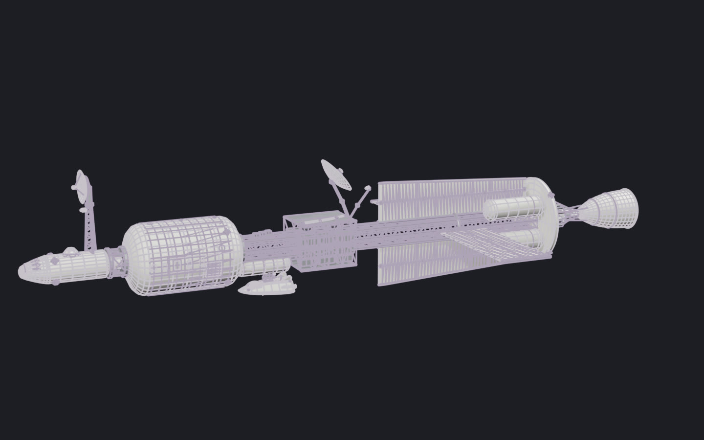

A 180 m deep-space survey ship laid out like NASA's nuclear-thermal transfer-ship studies: the crew at the bow, the reactor aft behind a shadow shield, the radiators inside its shadow; ISS-style truss, cupola and arrays. Lander 2 rides docked at its port. Drag to orbit; click it, then scroll to zoom; R replays the assembly, P shows every part as designed, not measured, S shows it as a solid.

© 2026 Artyom Andreyev. All rights reserved: to view here, not to copy, adapt or reuse. Not under Construct's Apache-2.0 licence.